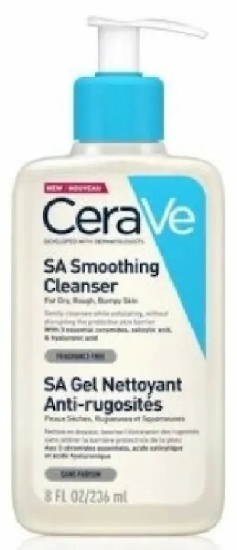
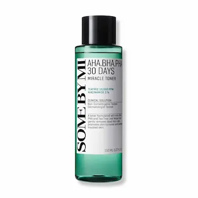

Ключевые ингредиенты для регулирования жирности кожи и
предотвращения закупорки пор
Ключевые ингредиенты для регулирования жирности кожи и
предотвращения закупорки пор
Как ухаживать за кожей с закупоренными порами
Основная цель ухода — снизить избыточную выработку себума, очистить поры и предотвратить появление комедонов. Важно выбирать мягкие очищающие средства, продукты с отшелушивающими компонентами и не забывать о легком увлажнении.


Закупоренные поры: причины и решения
Закупоренные поры — это результат накопления себума, омертвевших клеток и загрязнений. Понимание причин поможет выбрать правильный уход и снизить риск высыпаний.


Закупоренные поры: что это и почему появляются
Закупоренные поры — результат сочетания избыточного себума, омертвевших клеток кожи и загрязнений. Они проявляются как черные точки, белые комедоны и неровная текстура кожи. Поры перестают «дышать», и это создаёт условия для воспалений и акне.

Основные признаки закупоренных пор
Определить проблему можно по внешним признакам, не дожидаясь воспалений:

Почему уход может усиливать закупорку
Неправильные привычки в уходе часто усугубляют проблему. Даже стремление "подсушить" кожу может вызвать обратный эффект.

Ингредиенты и средства для очищения пор
Использование правильных ингредиентов помогает эффективно бороться с закупоркой, не пересушивая кожу:

Лучшие средства для очищения закупоренных пор


Практические советы по уходу
Чтобы уменьшить закупорку пор и предотвратить новые комедоны, важно соблюдать баланс между очищением и увлажнением:

Профилактика и образ жизни
Закупорка пор не всегда зависит только от ухода. Образ жизни и климатические условия также играют роль:

Часто задаваемые вопросы о закупоренных порах и избытке себума
Почему поры закупориваются?
Закупорка пор возникает, когда избыток себума, омертвевшие клетки кожи и загрязнения скапливаются в устьях пор. Это создаёт среду для комедонов, воспалений и повышенной жирности кожи.
Как определить, что у меня закупоренные поры?
Признаки: кожа блестит даже после умывания, появляются черные точки и небольшие воспаления, ощущается плотная текстура кожи на щеках, лбу и носу.
Можно ли полностью избавиться от закупоренных пор?
Полностью убрать поры невозможно, но их внешний вид можно значительно уменьшить с помощью регулярного ухода: мягкого очищения, эксфолиации BHA-кислотами и себорегулирующих средств.
Как часто нужно очищать кожу с закупоренными порами?
Дважды в день достаточно: утром мягкий гель или пенка, вечером — средство с кислотами или себорегулирующими компонентами. Избегайте слишком частого умывания, чтобы не стимулировать ещё большую выработку себума.
Какие продукты помогут уменьшить жирность и очистить поры?
Ищите средства с салициловой кислотой, ниацинамидом, цинком, экстрактами чайного дерева или глиной. Они регулируют работу сальных желез, уменьшают воспаления и делают поры визуально меньше.
Стоит ли использовать скрабы при закупоренных порах?
Механические скрабы могут травмировать кожу и усугубить проблему. Лучше отдать предпочтение мягкой химической эксфолиации (BHA-кислоты) и маскам с глиной для глубокого очищения.
Можно ли совмещать уход от закупоренных пор с декоративной косметикой?
Да, но выбирайте легкие, некомедогенные текстуры. Тяжелые кремы и масла могут усиливать закупорку пор, особенно на Т-зоне.
Когда нужно обратиться к дерматологу?
Если поры постоянно закупорены, появляются гнойнички или воспаления, а домашний уход не помогает — консультация дерматолога поможет подобрать подходящие препараты и процедуры.